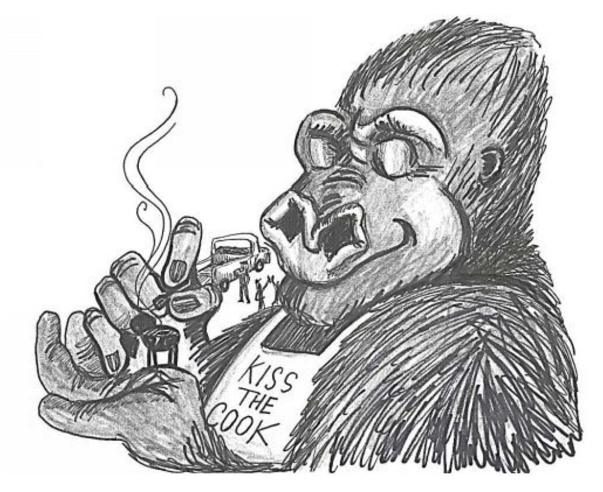
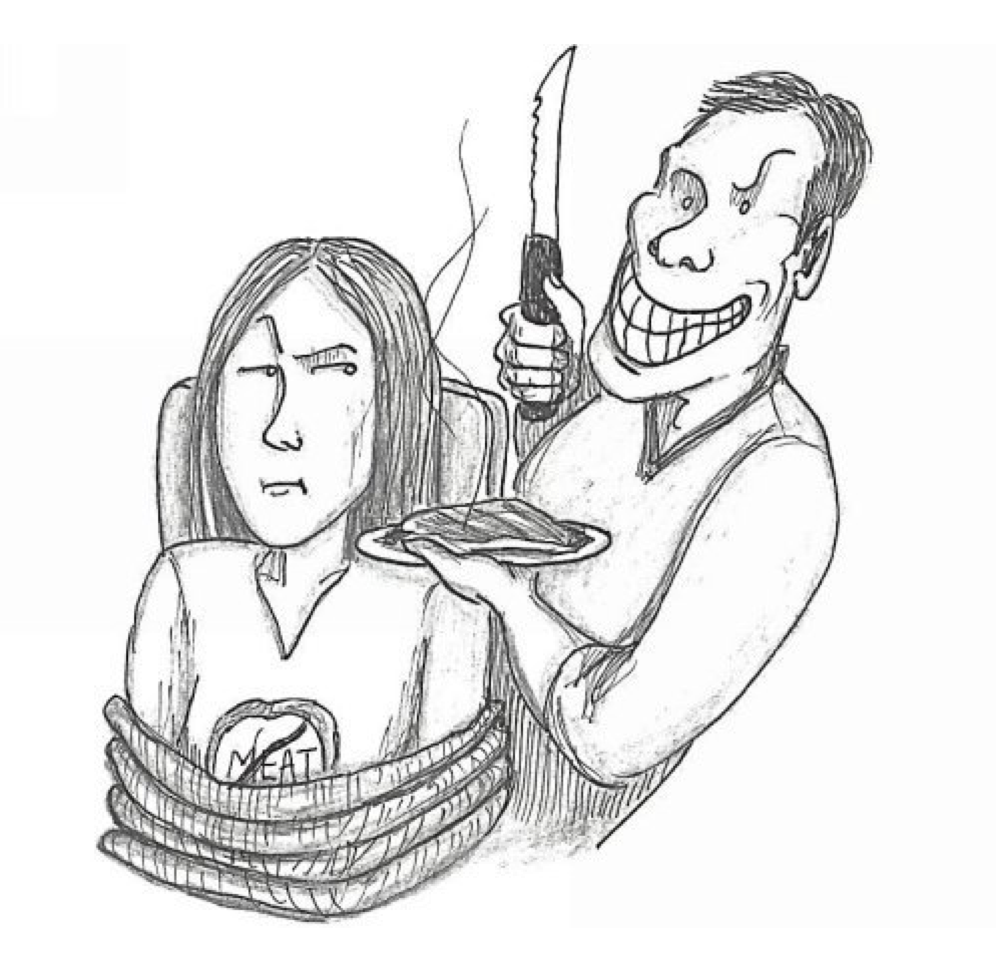

Visual Vocabulary
Visualize Your Vocabulary: Turn Any SAT/ACT Word into a Picture and Remember It Forever (Kindle Locations 221-235). Shayne Gardner. Kindle Edition
meticulous
meticulous: (muh-tik yuh-luhs) adjective – taking extreme care about minute details
synonyms: exact, fastidious, fussy, nitpicking, perfectionistic
origin: From the Latin meticulosus, meaning “fearful, timid.”
example: I don’t know who is more meticulous , my brain surgeon or my accountant, but I’m glad of both.
memory word: Matt-tick-useless
picture: Matt the tick is useless . Since he takes extreme care with the details , it takes forever to get to the actual blood sucking. He has a thing with dog hair, so he shaves the target area, draws a target, applies sanitizer—and well, you get the point.

congregate
congregate: ( kong gri-gayt) verb – to come together, especially in large numbers
synonyms: assemble, convene, converge, gather, meet up
origin: From the Latin congregare, meaning “to herd together, collect into a flock.”
example: Wherever there is good beer, men will congregate .
memory word: Kong-Greg-gate
picture: Greg the football fanatic is best friends with King Kong. Wherever Greg goes, his buddy Kong follows. Every Sunday, Kong, Greg, and friends gather together for a tailgate party before the game. You might say they Kong-Greg-gate .

tenacious
tenacious: (tuh-nay shuhs) adjective – holding fast; keeping a firm hold
synonyms: determined, persistent, relentless, steadfast
origin: From the Latin tenax, meaning “holding fast, clinging.”
example: Our legislators are tenacious ; they want to raise our taxes, and by God, they will never give up.
memory word: tennis-shoes
picture: You take up rock climbing and buy a new pair of tennis shoes made specifically for the sport. They are called Mountain Claws because of the metal claws designed to dig into a surface and keep a firm hold .
arid
arid: ( ar id) adjective – lacking sufficient water or rainfall; extremely dry
synonyms: barren, desert-like, dry as a bone, parched
origin: From the Latin aridus , meaning “dry, arid.”
example: The big island of Hawaii has 11 of the world’s 13 climate zones. One of these zones is arid.
memory word: air-it
picture: In the process of making the 13 climate zones of Earth, God decided to create Death Valley as one of the desert zones. He caused the wind to blow and blow to air it out and allowed very little rainfall.
disdain
disdain: (dis-dayn ) noun – lack of respect accompanied by a feeling of intense dislike; verb – to disrespect
synonyms: antipathy, aversion, contempt, derision; despise
example: Some love the president, and others hold him in utter disdain .
memory word: dis-Dayne
picture: Poor Dayne gets no respect. People love to dis Dayne . They despise him and treat him with contempt .
compromise
compromise: ( kom pruh-mahyz) noun – an accommodation where both sides make concessions; verb – to expose or make liable to danger, suspicion, or disrepute
synonyms: agreement, deal, win-win; endanger
origin: From the Latin compromittere, meaning “to make a mutual promise.”
example: Every successful relationship entails compromises .
memory word: compost-mice
picture: Mice invade your garden compost. You make a deal with them. You’ll save some scraps just for them, if they’ll stay out of your compost. The compost mice agree to this arrangement .
superficial
superficial: (soo-per-fish uhl) adjective – being at, on, or near the surface; concerned with or comprehending only what is on the surface or obvious; not profound or thorough
synonyms: cursory, outward, perfunctory, shallow, skin-deep
origin: From the Latin superficialis, meaning “pertaining to the surface.”
example: With so much information and too little time, his lawyer could obtain only a superficial understanding of the case before the preliminary hearing.
memory word: super-fish-oil
picture: You massage some super fish oil into the eczema on your arm. It works great to soften the surface of the skin, but fails to treat the inflammation.
empathy
empathy: ( em puh-thee) noun – identification with and understanding of another’s feelings
synonyms: compassion, concord, deep sympathy, insight
example: Women seem to have more intuition and empathy than most men.
memory word: M-Puffy
picture: The alphabet lines up alphabetically. The letter M, puffy and hurting, suffers from an allergic reaction to something. The letters L and N demonstrate their compassion in this way: The L bites its lip, saying, “ I feel your pain, ” and the N cries in deep sympathy while placing its arm around M Puffy .
reconciliation
reconciliation: (rek-uhn-sil-ee-ay shuhn) noun – the end of a disagreement and the renewal of a good relationship; the process of making it possible for two different ideas or facts to exist together without being opposed to each other
synonyms: accord, agreement, compromise, harmony
origin: From the Latin reconcilare, meaning “to make good again, restore, repair.”
example: Will there ever be reconciliation between the Democrats and Republicans?
memory word: wreck-concentration
picture: In after-school study hall, there’s an annoying and disruptive student who keeps wreck ing your concentration . After each interruption, you shoot a volley of spit wads at him. Finally, he calls for a truce and you both agree to end the conflict .

belie
belie: (bih-lahy ) verb – to show to be false; to misrepresent
synonyms: contradict, contravene, disprove
example: Burgeoning unemployment numbers belie the administration’s claims that more Americans are finding work.
memory word: bee-lie
picture: You watch an animated version of The Wizard of Oz , called The Wizard of Buzz, in which all of the characters are bees. At the end of the movie, Dorothy and the gang discover the wizard is just an ordinary bee. They disprove the widespread belief in the great all-knowing Wizard of Buzz. Watch this movie and you’ll see a bee lie .
conform
conform: (kuhn-fawrm ) verb – to behave and think in the same way as most other people in a group or society; to agree with or match something
synonyms: accommodate, adjust, comply, harmonize, obey
origin: From the Latin conformare, meaning “to form, to shape.”
example: I empathize with teenagers these days. The peer pressure to conform to a lower standard is hard to resist.
memory word: gun-form
picture: A young man thinks he’s cool holding his gun sideways like a punk gangster. After a gun safety class, his gun form changes. He adjusts his form after studying the ”wrong way” and “right way” pictures.
scrutinize
scrutinize: ( skroot n-ahyz) verb – to examine in detail with careful or critical attention
synonyms: analyze, dissect, inspect, investigate, peruse
origin: From the Latin scrutari, meaning “to examine, search.”
example: Always thoroughly scrutinize any document before signing it.
memory word: screwed-in-nice
picture: The instructor at an auto mechanic school drifts around to each team of students as they learn how to use a torque wrench to tighten bolts perfectly. Using the torque wrench, he carefully inspects each bolt and observes, “Those are screwed in nice and tight.”
assiduous
assiduous: (uh-sij oo-uhs) adjective – working very hard and taking great care that everything is done as well as possible; constant, unremitting
synonyms: attentive, diligent, exacting, scrupulous
origin: From the Latin assidere, meaning “to sit down to.” example: I recommend my handyman to everyone because of his assiduous work and attention to detail.
memory word: Sid-you-wuss
picture: The guys quit work to go out and grab a few drinks. One of them asks Sid if he’s coming. He groans, “No, I need to finish my TPS report and bang out a few more details on this contract.” His co-worker snorts, “ Sid, you wuss . You’re no fun. You’re too diligent .”
emulate
emulate: ( em yuh-layt) verb – to attempt to equal or excel by imitation
synonyms: imitate, mimic, mirror, rival
origin: From the Latin aemulari, meaning “to rival, emulate.” example: It is important for children to strive to emulate their heroes.
memory word: emu-late
picture: All of the animals in the zoo participate in the Imitate an-Ostrich contest. An emu shows up too late for the judging. Too bad the emu ’s late; he would have rivaled all of the other contestants.
abstinence
abstinence: ( ab stuh-nuhns) noun – the practice of not allowing yourself something (such as food, alcohol, or sex) for moral, religious, or health reasons
synonyms: asceticism, forbearance, self-denial, self-restraint
origin: From the Latin abstinere, meaning “to withhold, keep back.” example: Practicing abstinence requires self-control and will power.
memory word: abs-stance
picture: A guy with an awesome six pack refrained from all of his favorite foods to reveal his ripped abs. He hangs out at the beach every day so he can show off his abs. His abs look great, but must he hold that silly bodybuilder abs stance?
exemplary
exemplary: (ig-zem pluh-ree) adjective – worthy of imitation; being or serving as an illustration of a type
synonyms: commendable, excellent, ideal, laudable
origin: From the Latin exemplaris, meaning “serving as a copy.”
example: George Washington was a man of exemplary character.
memory word: except-Larry
picture: A teacher gushes to her class, “You have all been model students today. I commend you all—well, except Larry .”
peccant
peccant: ( pek uhnt) adjective – guilty of a moral offense; violating a rule, principle, or established practice
synonyms: corrupt, erring, guilty, sinning
origin: From the Latin peccare, meaning “to make a mistake, to err or sin.”
example: In a sane world, we would prosecute peccant politicians.
memory word: peck-it
picture: A religious woodpecker warns her children as they leave to play and explore for the day, “Don’t bother Old Man Owl, who stands watch on the wooden cross in the church yard. Whatever you do, don’t peck it or you’ll be guilty of sin! ”
surreptitious
surreptitious: (sur-uhp-tish uhs) adjective – done secretly so no one will notice
synonyms: clandestine, covert, furtive, sneaky, stealthy
origin: From the Latin surripere, meaning “to seize secretly.”
example: I was surreptitious in secretly planning a party for my wife.
memory word: syrup-dishes
picture: A family enjoys a Saturday night tradition of a “pancake breakfast” and a movie at home. There’s always a big sticky mess to clean up on Sunday morning. One morning, the kids surprise Mom and Dad by rising early and sneaking downstairs to clean the syrup py dishes .
frugal
frugal: ( froo guhl) adjective – economical in use or expenditure; prudently saving or sparing; not wasteful
synonyms: parsimonious, Spartan, stingy, thrifty, tight
origin: From the Latin frugi, meaning “useful, temperate, economical.”
example: When the economy slows down, people have less money to spend and are forced to be frugal .
memory word: fruit-gull
picture: You love fruit. It’s pretty much all you eat. You hate to waste anything , even the cores, stems, and seeds. Luckily, your pet sea gull eats all of the remaining fruit scraps. She’s your fruit gull .
discredit
discredit: (dis-kred it) verb – to injure the credit or reputation of; to show to be undeserving of trust or belief
synonyms: defame, disgrace, disparage, disprove, smear
example: The myriad contradictions in the witness’s testimony served to discredit him.
memory word: disc-read-it
picture: A double layer disc bragged that it could hold 8.5 gigabytes of data. Another disc demanded, “I don’t believe it. Turn around so I can see your label.” The first disc complied. After the second disc read it , it said, “Your label says you can hold only 4.7 gigabytes of data. I’m sorry to disprove your assertion, but you’re wrong.”
exasperate
exasperate: (ig-zas puh-rayt) verb – to irritate or provoke greatly
synonyms: aggravate, agitate, anger, rankle, rouse, vex
origin: From the Latin exasperare, meaning “to make rough, irritate, provoke.”
example: I don’t know which of my pet peeves exasperates me the most.
memory word: egg’s-aspirin picture: Eleven eggs in an open carton sing, “Ninety-nine bottles of beer on the wall.” This irritates the twelfth egg to no end. They aggravate him so much that he resorts to taking aspirin for his headache. Hopefully, the egg’s aspirin will kick in quickly.
substantiate
substantiate: (suhb-stan shee-ayt) verb – to provide information or evidence to prove something is true synonyms: corroborate, establish, support, validate, verify
origin: From the Latin substantiare, meaning “to give substance to.”
example: Although I find no evidence to substantiate his existence, I still believe in Santa Claus.
memory word: sub-stands-she-ate
picture: A six-foot sub sandwich testifies in court. He accuses his wife of abusing him. The defense lawyer asks him, “Would you please show proof to verify this ridiculous claim?” The jury is horrified when the sub stands up, showing that she ate parts of him by taking huge bites.
prudent
prudent: ( prood nt) adjective – sensible and careful when making judgments and decisions; avoiding unnecessary risks
synonyms: discerning, judicious, sagacious, shrewd
origin: From the Latin prudentem, meaning “sagacious, circumspect.”
example: If, during your annual medical check-up, your doctor says you have a rare disease that can only be cured with immediate brain surgery, it would be prudent to seek a second opinion.
memory word: student
picture: A young man, wise and judicious beyond his years, has studied the habits of highly effective people. He has been a good student, and now he too is shrewd .
obviate
obviate: ( ob vee-ayt) verb – to eliminate the need for something; to prevent something from happening
synonyms: avert, block, deter, forestall, interfere, preclude
origin: From the Latin obvius, meaning “that is in the way, that moves against.”
example: It is only a matter of time before technology and competition obviate the need for the USPS .
memory word: Bob-V-8
picture: Bob hates veggies, but he eats the daily recommended serving because he knows it’s good for him. Then he discovers V-8 juice. Now Bob V-8 can drink his veggies, making it unnecessary for him to eat another veggie as long as he lives.

extenuating
extenuating: (ik-sten yoo-ay-ting) adjective – serving to make a fault, offense, illegal act, etc., appear less serious
synonyms: diminishing, downplaying, justifying, moderating
origin: From the Latin extenuare, meaning “to lessen, reduce, diminish.”
example: The judge’s ruling was light due to extenuating circumstances.
memory word: extend-you-waiting
picture: You leave home in the morning for a job interview, allowing for the normal stop-and-go traffic, but a bad auto accident delays you, making you late for the interview. You explain this to the interviewer upon your arrival. Normally, tardiness would disqualify someone for a job interview, but the interviewer heard about the traffic jam and knew it would extend you waiting in traffic. He lets you reschedule the interview.
quell
quell: (kwel) verb – to suppress or put an end to; to calm
synonyms: crush, extinguish, overcome, quench, stifle, stop
example: The riot police were called in to quell the furious protestors.
memory word: quail
picture: Every time Maude becomes anxious, angry, or stressed out, holding her pet quail calms her down. It puts an end to her crisis.
diligent
diligent: ( dil i-juhnt) adjective – quietly and steadily persevering, especially in detail or exactness; characterized by care and perseverance in carrying out tasks
synonyms: industrious, painstaking, persistent, steadfast
origin: From the Latin diligentem, meaning “attentive, assiduous.”
example: My brother worked diligently with ancestry.com, tracing our family tree back to the Mayflower .
memory word: dill-against
picture: A dill pickle producer grows the best dill in the world. He gives painstaking attention to every detail , carefully planting, watering, cultivating, and harvesting the dill that makes his pickles the best. He brags, “I’ll put my dill against all others and beat them every time.”
submissive
submissive: (suhb-mis iv) adjective – too willing to accept another person’s authority and obey without questioning
synonyms: docile, malleable, meek, obsequious, pliable
origin: From the Latin submittere, meaning “to lower, reduce, yield.”
example: The submissive Cold Mountain Penitentiary death row inmate marched the long green mile.
memory word: sub-missile
picture: A submarine threatens to fire a missile at another submarine. The sub willingly submits , throwing its hands up and pleading, “Don’t shoot! I’ll do whatever you want!” The sub with the missile crows, “Wow! That was easier than I expected.”

demagogue
demagogue: ( dem uh-gog) noun – a person, especially an orator or political leader, who gains power and popularity by arousing the emotions, passions, and prejudices of the people; verb – to treat or manipulate (a political issue) in the manner of a demagogue
synonyms: fomenter, instigator, politician, rabble rouser
origin: From the Greek demagogos, meaning “popular leader, mob leader.” example: Adolf Hitler is one of history’s most notorious demagogues .
memory word: den-of-dog
picture: You come home from school one day to discover your dog is a radical rabble rouser . You find him in the den delivering a rousing speech to a gathering of neighborhood dogs. He says to the den of dog s, “I’ll say it again. You must rise up and chase every feline from the neighborhood, lest you wake up one day to find you are overrun with them.”
provocative
provocative: (pruh-vok uh-tiv) adjective – tending to provoke, excite, or stimulate
synonyms: incensing, inciting, spurring, stimulating
origin: From the Latin provocativus, meaning “calling forth.”
example: Most of the White House press corps are lapdogs for the president, but one journalist asks probing and often provocative questions.
memory word: pro-chocolate
picture: A group of chocolate lovers meets every week in the mall at the Chocolate Crazy store to indulge their passion. A vanilla villain infiltrates the group’s meeting, shouting, “Chocolate sucks! Death to chocolate! Down with brown! To hell with Hershey’s! Viva la vanilla!” This incites the pro chocolate group to grab him, hold him down, and force-feed him some chocolate.
officious
officious: (uh-fish uhs) adjective – intrusive in a meddling or offensive manner
synonyms: dictatorial, interfering, opinionated, pushy
origin: From the Latin officere, meaning “to get in the way of.”
example: After the residents of the retirement center reported the officious and bullying volunteer, he was asked to leave.
memory word: officials
picture: At halftime, the referees darted off the football field in a hurry. The teams entered their locker rooms a few minutes later to find the intrusive officials rifling through their lockers.
myriad
myriad: ( mir ee-uhd) noun – a large indefinite number; adjective – too numerous to count
synonyms: countless, infinite, innumerable, multitudinous
origin: From the Greek myrias, meaning “ten thousand, countless numbers.”
example: The beach has myriad grains of sand, more than can possibly be counted.
memory word: Mary-and-Ed
picture: Mary and Ed were entered into Ripley’s Believe It Or Not and Guinness World Records for having a large number of children that even they couldn’t count .
collaborate
collaborate: (kuh-lab uh-rayt) verb – to work with others in order to produce or achieve something; to cooperate treasonably with an enemy
synonyms: collude, conspire, cooperate, join forces, team up
origin: From the Latin collaborare, meaning “to work with.”
example: The researchers collaborated to find a cure for the disease.
memory word: cold-lab-rat
picture: In a cage, several cold lab rats work together to build a fire to warm themselves. One twists a stick between his palms while another blows on the kindling. Several others block the view of the lab technicians so they can’t see what the cold lab rats are up to.

garner
garner: ( gahr ner) verb – to acquire or collect something, such as information, support, food, etc.
synonyms: amass, gather, harvest, lay in, stockpile, store
origin: From the Latin granarium, meaning “a storehouse for grain.”
example: The activist group garnered 100,000 signatures to put the measure on the ballot.
memory word: Carter
picture: President Jimmy Carter, our 39 th president, was a wealthy peanut farmer before aspiring to become the leader of the free world. Imagine President Carter gathering a huge stockpile of enormous peanuts.
jaundiced
jaundiced: ( jawn dist) adjective – affected by or exhibiting envy, prejudice, or hostility; yellow or yellowish
synonyms: biased, bitter, cynical, prejudiced, skeptical
example: I base my jaundiced view of politicians on experience.
memory word: John-dust
picture: You live on the outskirts of town on a dirt road. John, your neighbor down the way, rides a yellow tractor past your house several times a day, stirring up dust. Even though he is a good neighbor, you resent him for the John dust he stirs up.
latent
latent: ( layt nt) adjective – present but not visible or actualized; existing as potential
synonyms: dormant, inactive, quiescent, sleeping, unseen
origin: From the Latin latere, meaning “to lie hidden.”
example: Children have a large reserve of latent talent.
memory word: Latin
picture: You studied Latin for a couple of years in high school and became fairly proficient at it. However, life intervened; you went off to college, married, and started a family. Twenty years later, you find some time to take up Latin again and discover you didn’t forget much. Your Latin just went dormant .
flagrant
flagrant: ( flay gruhnt) adjective – openly and outrageously bad or shocking; showing no respect for people, laws, customs, etc.
synonyms: blatant, brazen, disgraceful, egregious, heinous
origin: From the Latin legal term flagrante delicto, literally meaning “while the crime still burns,” and figuratively referring to a criminal caught red-handed.
example: As a result of his flagrant disregard of traffic laws, he has a pile of unpaid speeding tickets.
memory word: fillet-grin
picture: You tie a vegetarian to a chair, determined to fillet a steak and make her eat it. An evil grin transforms your face while you fillet the steak. You call it your fillet grin . Now, that is outrageously bad !

loquacious
loquacious: (loh-kway shuhs) adjective – talking too much, often about trivial matters
synonyms: chatty, gabby, garrulous, talkative, verbose
origin: From the Latin loquax, meaning “talkative.”
example: I met an interesting couple on our cruise. She was as loquacious as he was laconic.
memory word: low-places
picture: Garth Brooks follows you everywhere, telling you about all the people he knows in low places. He won’t shut up about it. He keeps talking nonstop. If you are too young to know about Garth Brooks or have never heard his song “ Low Places,” check it out online.
daunt
daunt: (dawnt) verb – to overcome with fear; to lessen the courage of
synonyms : cow, deter, discourage, intimidate, overawe, scare
origin: From the Latin domitare, meaning “to tame, subdue.”
example: The idea of going back to college to earn another degree and start a new career at age 50 is daunting .
memory word: dot
picture: A bully covered with red dot s threatens to touch you and give you the chicken pox. Overcome with fear, you run screaming from the building.